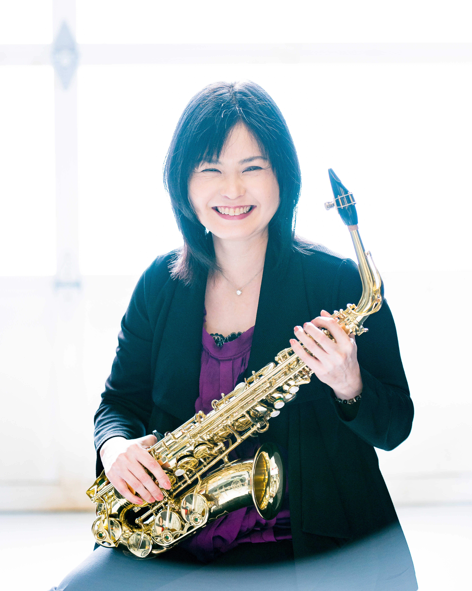

Philosophy
I believe learning music should be fun. If you are interested and motivated, you will learn faster and improve more.
I started leaning Piano when I was in elementary school. I received negative comments and was treated coldly by the teacher every week. Gradually, I lost interest in music. However, I joined a wind ensemble years later. Then I started to like music once again.
I learned leaning music should be fun and its environment should be more encouraging and positive. Learning any musical instrument is very hard and sometimes it is painful. Practice is the only way to get better. Let’s try to have fun and help each other to become better musician!
音楽は楽しく学ぶがモットーです。楽しくなければもっと興味を持ち向上心も芽生えないと思っています。「好きこそ物の上手なれ」です。
私は小学生の頃ピアノを習い始めたのですがあまり楽しいレッスンではありませんでした。毎週ネガティブな事を言われ続け次第に音楽が嫌いになっていきました。そんな時吹奏楽に偶然出会いまた音楽を楽しむ心が芽生えました。
過去の自分の経験を踏まえ、レッスンは「ポジティブ」 でなければならないと思っています。どの楽器も難しく上手くなるのは大変です。練習しなければ絶対に上達はしません。難しく大変だからこそ一緒に楽しく学びませんか？